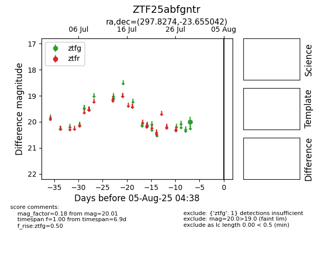

Target ZTF25abfgntr at 2025-08-05 04:38, see:
FINK: fink-portal.org/ZTF25abfgntr
Lasair: lasair-ztf.lsst.ac.uk/objects/ZTF25abfgntr
ALeRCE: alerce.online/object/ZTF25abfgntr
alt names
ZTF25abfgntr (ztf,fink)
coordinates:
equatorial (ra, dec) = (297.8274,-23.65504)
galactic (l, b) = (17.2031,-23.17276)
photometry
last ztfg=20.01
1 ztfg detections
